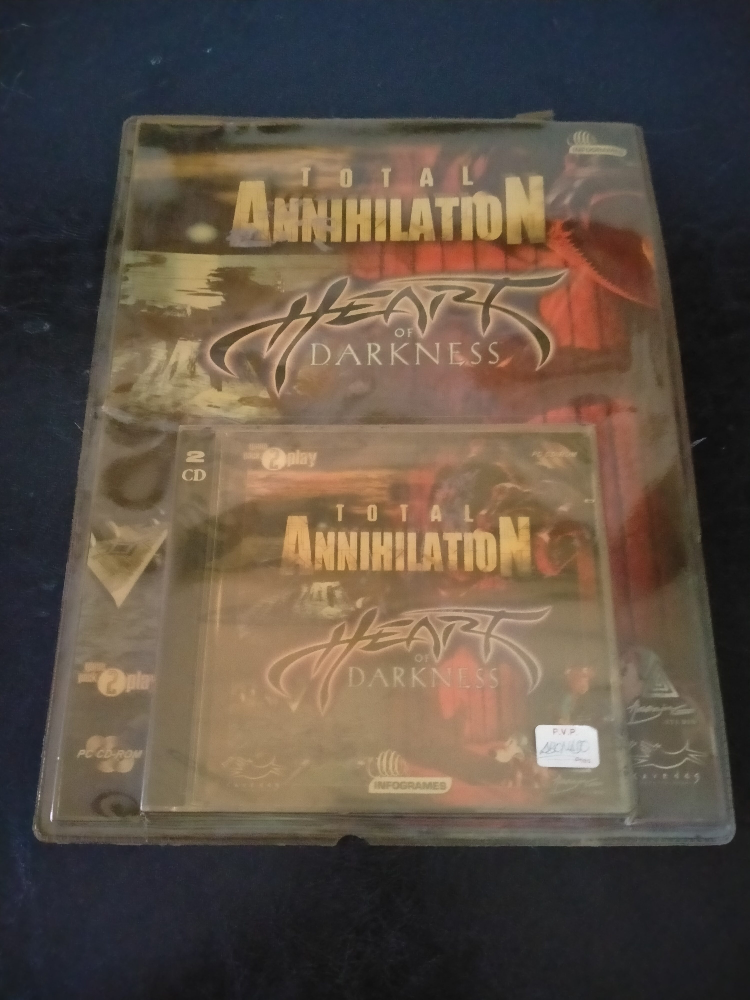

Ficha #000000
Total Annihilation + Heart of Darkness
Total Annihilation + Heart of Darkness es una edición recopilatoria en Jewel Case que reúne dos títulos muy distintos del PC de finales de los noventa. Total Annihilation, desarrollado por Cavedog Entertainment, es uno de los referentes de la estrategia en tiempo real por su escala de combate, uso intensivo de unidades, relieve del terreno, economía de recursos y enfoque más físico y sistémico que otros RTS de su época. Heart of Darkness, desarrollado por Amazing Studio, representa otra tradición del PC y la consola de los noventa: la aventura de acción cinemática con animación elaborada, plataformas, escenas de transición y una puesta en escena muy vinculada al legado de Eric Chahi y Delphine Software. Esta edición española bajo sello E-Play/Infogrames en soporte de 2 CD-ROM resulta relevante para preservación porque documenta una forma habitual de reedición económica en España, combinando licencias internacionales, formato Jewel Case, compatibilidad Windows 95/98 y distribución compacta para el mercado doméstico de PC.
- Formato
- Jewel Case
- Plataforma
- Win95 Win98
- Género
- Estrategia en tiempo real Acción Plataformas Aventura
- Serie
- Todos Jewel Case
- Desarrollador
- Cavedog Entertainment, Amazing Studio
- Distribuidor
- Infogrames, E-Play
- EAN
- —
Contenido de la edición
- 2 CD-ROM
- caja Jewel Case
- carátula
- funda plástica exterior
Preservación
- Protección
- Verificación de CD
- Formato recomendado
- BIN/CUE
- Jugable en virtualización
- Sí
Preservación recomendada mediante imagen completa de ambos CD-ROM en formato BIN/CUE, manteniendo la estructura original de los discos y documentando cada soporte por separado. Al tratarse de una edición recopilatoria con dos juegos distintos, conviene verificar individualmente la instalación y ejecución de Total Annihilation y Heart of Darkness con las imágenes montadas, conservando la posible comprobación de disco propia de cada ejecutable.